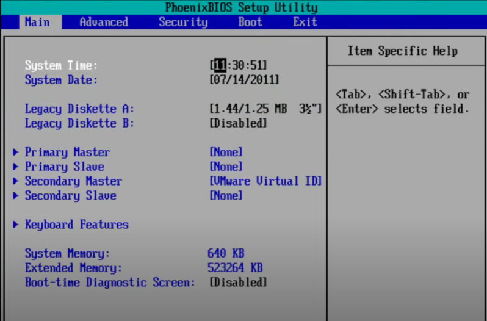
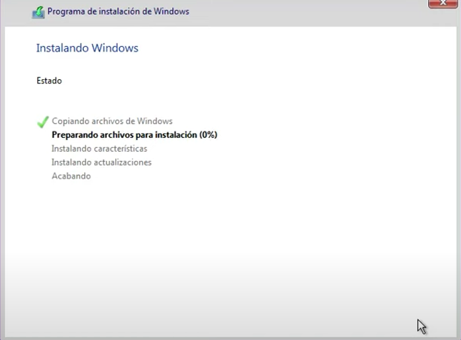

Desarrollo
1. PREPARACIÓN
Lo principal que debemos saber antes de iniciar con el formateo de la notebook, es que windows es más compatible con tu hardware, por ejemplo:
- Para Windows 7 se necesita como mínimo un procesador de 1GHz, la RAM debe de ser de 1GB para 32 bits o 2 GB para 64 bits, el disco duro un mínimo de 16 GB para 32 bits o 20 GB para 64 bits, la pantalla de 800x600 y una tarjeta gráfica.
- Para Windows 10 se necesita como mínimo un procesador de 1GHz, la RAM debe de ser de 1GB para un SO de 32 bits o 2BG para un SO de 64 bits, el disco duro debe de ser de 16 GB para un SO de 32 bits o 32 GB para el de 64 bits, el tamaño de la pantalla tiene que ser de o mayor a 800x600 y una tarjeta gráfica.
- Para Windows 11 se necesita como mínimo un procesador de 1 GHz o más rápido con 2 o más núcleos, de RAM se necesita 4 GB y de disco duro 64 GB, la pantalla debe de ser mayor a 9” con resolución HD (720p) y tarjeta gráfica.
También existen versiones modificadas llamadas lite, por ejemplo Windows 10 lite, que el hardware ha de ser con las especificaciones del Windows 7. Pero con estas versiones hay que tener cuidado porque pone en riesgo nuestra seguridad.
Lo siguiente es tener teclado y mouse. El teclado debe ser compatible con la notebook. Normalmente el teclado integrado es suficiente, pero en algunos casos puede ser necesario un teclado USB externo. Y el mouse puede ser el touchpad integrado en la notebook o un mouse USB externo. Si ha de ser necesario se deberá configurar en la BIOS/UEFI.
También se necesita la imagen ISO de windows
Se necesitará una unidad USB tenga al menos 8 GB de capacidad y que no tenga datos importantes, ya que será formateada durante el proceso de creación del USB booteable.
Para la creación del USB booteable que mencionamos anteriormente, se utiliza una aplicación llamada Rufus.
Rufus: https://rufus.ie/es/
2. CREACIÓN DE USB BOOTEABLE
Para crear un medio de instalación de Windows utilizando una unidad USB, hay que seguir varios pasos que implican la descarga de una imagen ISO de Windows y el uso de un programa para crear el USB booteable. A continuación les explicare como hacerlo:
- Descargar la imagen ISO.
- Descargar e Instalar el Programa de Creación de USB Booteable: Yo utilizare Rufus, es el más usado y más conocido, ingresa a este link y descarga la versión más reciente del programa https://rufus.ie/es/, al ser una aplicación portátil, simplemente abri el archivo .exe descargado y no va a ser necesario instalar nada.
- Configuración del Programa: Debemos conectar la unidad USB con al menos 8 GB de capacidad a tu computadora (Recomendación adicional, fijarse cuál de todos los puertos USB lee más rápido, comúnmente es el de tu derecha pero puede variar), luego de eso abriremos Rufus, selecciona tu unidad USB en el campo “Dispositivo”. Ahora haz clic en el botón “Seleccionar” y luego el campo “Selección de arranque”, lo que harás ahora es navegar hasta encontrar la ubicación de la imagen ISO que descargaste y seleccionala. Ahora particionaremos el disco para que la información de la computadora (solo archivos importantes) no se pierda. Deberás seleccionar MBR o GPT, pero, ¿Qué es mejor? El MBR funciona mejor con los sistemas anteriores, en cuanto al GPT, es más compatible con los sistemas más avanzados y nuevos, la ventaja de GPT es el enorme tamaño de la partición, el número de particiones y la capacidad de recuperación. Además, las computadoras que funcionan con UEFI sólo pueden soportar GPT. Así que si te lo permite tu dispositivo, la mejor opción sería GPT.
- Proceso de Copia de la Imagen ISO a la USB: Primero hay que asegurarse de que las opciones seleccionadas son correctas:
- Dispositivo: Tu unidad USB.
- Selección de arranque: La imagen ISO de Windows.
- Esquema de partición: MBR o GPT según tu sistema.
- Sistema de archivos: NTFS.
(Recomendación adicional en "Etiqueta del volumen", puedes poner un nombre descriptivo para tu USB, así podrás identificar fácilmente tu USB)
Luego marca la opción "Formato rápido" después "Crear disco de arranque con" y asegúrate de que está configurado en "Imagen ISO". Haz clic en "Iniciar", Rufus te advertirá que todos los datos en la unidad USB se perderán (por eso es que debe estar vacío). Confirma para continuar. Rufus comenzará a copiar la imagen ISO a la USB y mostrará un indicador de progreso. Una vez completado, Rufus mostrará el mensaje "¡LISTO!" y podrás cerrar el programa.
3. CONFIGURACIÓN DEL BIOS/UEFI
Lo primero que debemos saber son las teclas para acceder al BIOS o UEFI, estas varían según el fabricante de la notebook, pero las más comunes incluyen:
- F2: Usada por muchos fabricantes como Acer, ASUS, Dell.
- Del o Delete: Usada por fabricantes como MSI, ASUS.
- Esc: Usada en algunos modelos de HP, Lenovo.
- F10: Usada por HP y otros fabricantes.
- F12: Algunas notebooks utilizan esta tecla para acceder directamente al menú de arranque.
Debes presionar la tecla correspondiente inmediatamente después de encender la computadora. A veces, puede ser útil presionar repetidamente la tecla hasta que el BIOS/UEFI se abra.
Es importante saber las diferencias entre BIOS y UEFI, A continuación una breve explicación de ellas:
La BIOS es una interfaz basada en texto que utiliza el esquema de partición MBR, está limitado a discos duros de hasta 2.2 TB, y tiene menos opciones de configuración comparado con UEFI.
La UEFI es una interfaz gráfica, a menudo con soporte para mouse que utiliza el esquema de partición GPT, este soporta discos de más de 2.2 TB e incluye características avanzadas como Secure Boot.
Hay que cambiar el orden de arranque para que el USB booteable sea la primera opción, primero debemos acceder al BIOS/UEFI, que como antes lo explicamos, debes encender la notebook y presionar la tecla correspondiente. Luego hay que encontrar las opciones de arranque, que generalmente se encuentra en una pestaña llamada "Boot" o "Arranque". Ahora seleccionamos la opción para cambiar el orden de arranque, utiliza las teclas de flecha para mover el USB booteable a la primera posición de la lista de dispositivos de arranque, guarda los cambios y sal del BIOS/UEFI. Generalmente esto se hace presionando F10, pero puede variar según el fabricante, la notebook se reiniciará automáticamente.
Podemos encontrar configuraciones adicionales como el modo de arranque, aquí seleccionamos UEFI o Legacy BIOS según el tipo de partición de la unidad USB, UEFI es más moderno y compatible con GPT, mientras que Legacy BIOS es más compatible con MBR.

.png)
.png)
4. INSTALACIÓN DE WINDOWS
El proceso de arranque desde el USB consiste en conectar el USB Booteable, se inserta la unidad USB booteable en un puerto USB de tu computadora, enciende la computadora y debería arrancar desde el USB automáticamente, si no es así, revisa el orden de arranque en la BIOS/UEFI. El instalador de Windows debería cargarse automáticamente desde el USB booteable.
En la pantalla de instalación de Windows, selecciona el idioma, formato de hora y moneda, y el tipo de teclado. Luego haz clic en "Siguiente" y selecciona "Instalar ahora". Se te pedirá que ingreses la clave de producto de Windows, si no tienes una clave en este momento, selecciona "No tengo clave de producto" y sigue las instrucciones. A continuación, selecciona la edición de Windows que quieres instalar y haz clic en "Siguiente". Acepta los términos de la licencia y haz clic en "Siguiente". En la siguiente pantalla, selecciona "Personalizada: instalar solo Windows (avanzado)".
Luego vamos a eliminar particiones existentes, en la pantalla "¿Dónde deseas instalar Windows?", verás una lista de las particiones en tu disco duro. Si hay particiones existentes del sistema anterior, selecciona cada una y haz clic en "Eliminar". Ten en cuenta que esto borrará todos los datos en esas particiones, asegúrate de haber respaldado tus datos importantes antes de continuar. Una vez que todas las particiones antiguas se hayan eliminado, deberías ver una sola entrada llamada "Espacio sin asignar". Selecciona este espacio sin asignar y haz clic en "Siguiente".
El proceso de instalación de Windows comenzará. La computadora se reiniciará varias veces durante este proceso. Simplemente deja que la instalación continúe hasta que llegues a la pantalla de configuración inicial.
En la pantalla de configuración inicial, selecciona tus preferencias de región, idioma y teclado. Conéctate a una red Wi-Fi si es necesario y sigue las instrucciones para crear una cuenta de usuario y configurar tu computadora.
.png)
.png)

5. POST-INSTALACIÓN Y CONFIGURACIÓN ADICIONAL
Una vez que se haya completado la instalación y la configuración inicial, la primera tarea es buscar e instalar actualizaciones de Windows, desde Configuración, a Actualización y seguridad, a Windows Update, y haz clic en Buscar actualizaciones. Windows descargará e instalará las actualizaciones disponibles. La siguiente tarea es instalar los controladores. Hay que visitar el sitio web del fabricante de tu notebook y descargar los controladores más recientes para tu modelo específico. Esto incluye controladores para la tarjeta gráfica, el chipset, el audio y otros componentes. Luego hay que instalar el software esencial, como un navegador web, un reproductor multimedia, y cualquier otra aplicación que necesites para tu trabajo o entretenimiento diario. Luego hay que restaurar tus datos desde las copias de seguridad que realizaste antes de formatear la notebook. Copia tus archivos personales a las ubicaciones apropiadas en tu nueva instalación de Windows.
Finalmente hay que realizar una configuración de seguridad adicional como:
- Activar Windows Defender: Windows Defender es la solución antivirus integrada en Windows. Asegúrate de que esté activado y actualizado.
- Configurar Cortafuegos: Asegúrate de que el cortafuegos de Windows esté activado para proteger tu computadora de amenazas externas.
- Habilitar Restauración del Sistema: Configura puntos de restauración del sistema para poder revertir cambios en caso de problemas futuros. Entra en el Panel de control, a Sistema y seguridad, a Sistema, y haz clic en Configuración avanzada del sistema. Luego selecciona la pestaña Protección del sistema y haz clic en Configurar.
- Configurar Opciones de Energía: Ajusta las opciones de energía para optimizar el rendimiento y la duración de la batería. Entra en Configuración, a Sistema, a Inicio/apagado y suspensión, y haz clic en Configuración adicional de energía.
.png)
.png)
.png)
.png)
.png)